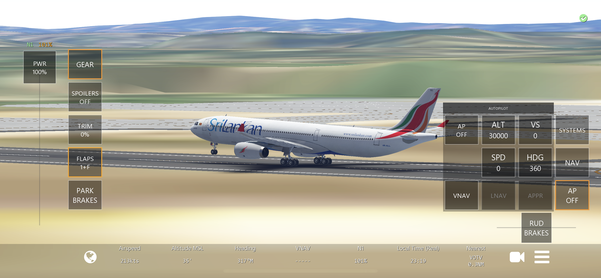
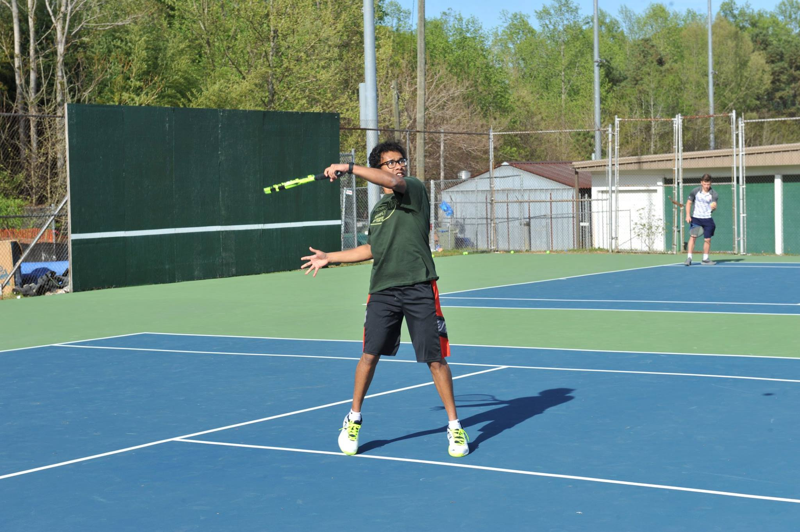

Outside of Computer Science

I love everything about airports, airplanes, and flight simulators. I have been playing Infinite Flight recently, but I am an all-time fan of X-Plane mobile edition. My favorite plane is the Boeing 777-300er.

My passion for tennis started when I was 6 years old and my dad introduced me to the sport. Since then, I have played competetively and recreationally for that past 13 years and counting. In middle school, I was ranked number one on my team and in high school, I was ranked number 2 on my varsity team. I am a left handed, aggressive baseliner who loves topspin and all things Babolat.
Nature is very important to me, and I take great pride in helping to take care of the environment. With this, I have been very fortunate to travel and experience nature on six continents. In this picture, I am on a sand dune in Namibia where there is nothing, but sand for miles!